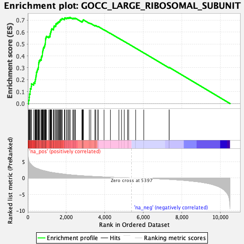
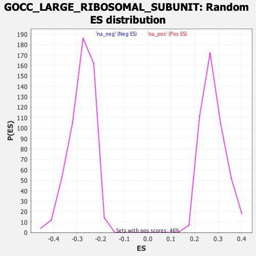

| Dataset | qlf.KOd4vsWTd4_gsea_score |
| Phenotype | NoPhenotypeAvailable |
| Upregulated in class | na_pos |
| GeneSet | GOCC_LARGE_RIBOSOMAL_SUBUNIT |
| Enrichment Score (ES) | 0.7221978 |
| Normalized Enrichment Score (NES) | 2.5891743 |
| Nominal p-value | 0.0 |
| FDR q-value | 0.0 |
| FWER p-Value | 0.0 |

| SYMBOL | RANK IN GENE LIST | RANK METRIC SCORE | RUNNING ES | CORE ENRICHMENT | |
|---|---|---|---|---|---|
| 1 | MRPL12 | 40 | 5.616 | 0.0279 | Yes |
| 2 | RPL7A | 71 | 4.969 | 0.0531 | Yes |
| 3 | RPL5 | 82 | 4.819 | 0.0794 | Yes |
| 4 | MRPL17 | 118 | 4.477 | 0.1013 | Yes |
| 5 | MRPL15 | 128 | 4.421 | 0.1254 | Yes |
| 6 | MRPL45 | 178 | 4.068 | 0.1437 | Yes |
| 7 | MRPL13 | 187 | 4.009 | 0.1656 | Yes |
| 8 | RPL7L1 | 305 | 3.392 | 0.1735 | Yes |
| 9 | MRPL42 | 369 | 3.178 | 0.1854 | Yes |
| 10 | MRPL20 | 386 | 3.131 | 0.2016 | Yes |
| 11 | RPL6 | 410 | 3.044 | 0.2166 | Yes |
| 12 | RPL14 | 422 | 3.014 | 0.2325 | Yes |
| 13 | MRPL39 | 443 | 2.955 | 0.2473 | Yes |
| 14 | RPL29 | 450 | 2.937 | 0.2633 | Yes |
| 15 | MRPL38 | 482 | 2.881 | 0.2766 | Yes |
| 16 | MRPL35 | 506 | 2.827 | 0.2904 | Yes |
| 17 | MRPL19 | 540 | 2.776 | 0.3029 | Yes |
| 18 | RPL15 | 557 | 2.721 | 0.3168 | Yes |
| 19 | MRPL1 | 559 | 2.713 | 0.3320 | Yes |
| 20 | RPL10 | 569 | 2.692 | 0.3463 | Yes |
| 21 | RPL3 | 590 | 2.636 | 0.3593 | Yes |
| 22 | RPLP0 | 635 | 2.532 | 0.3694 | Yes |
| 23 | RPL8 | 701 | 2.422 | 0.3768 | Yes |
| 24 | RPL7 | 704 | 2.420 | 0.3903 | Yes |
| 25 | MRPL49 | 730 | 2.355 | 0.4012 | Yes |
| 26 | MRPL55 | 759 | 2.309 | 0.4116 | Yes |
| 27 | RPL36AL | 761 | 2.307 | 0.4245 | Yes |
| 28 | MRPL40 | 768 | 2.296 | 0.4369 | Yes |
| 29 | MRPL47 | 785 | 2.273 | 0.4482 | Yes |
| 30 | RPL35A | 800 | 2.259 | 0.4596 | Yes |
| 31 | MRPL28 | 814 | 2.241 | 0.4711 | Yes |
| 32 | RPL23 | 858 | 2.189 | 0.4793 | Yes |
| 33 | RPL27 | 882 | 2.152 | 0.4892 | Yes |
| 34 | MRPS18A | 892 | 2.133 | 0.5004 | Yes |
| 35 | MRPL32 | 912 | 2.114 | 0.5106 | Yes |
| 36 | MRPL11 | 916 | 2.112 | 0.5222 | Yes |
| 37 | RPL27A | 918 | 2.109 | 0.5340 | Yes |
| 38 | MRPL2 | 924 | 2.102 | 0.5454 | Yes |
| 39 | RPL11 | 939 | 2.074 | 0.5558 | Yes |
| 40 | MRPL22 | 969 | 2.033 | 0.5645 | Yes |
| 41 | RPL12 | 1095 | 1.838 | 0.5629 | Yes |
| 42 | MRPL41 | 1149 | 1.785 | 0.5679 | Yes |
| 43 | RPL10A | 1160 | 1.770 | 0.5769 | Yes |
| 44 | RPL13 | 1162 | 1.769 | 0.5868 | Yes |
| 45 | RPL21 | 1186 | 1.745 | 0.5945 | Yes |
| 46 | MRPL24 | 1193 | 1.738 | 0.6037 | Yes |
| 47 | RPL4 | 1216 | 1.713 | 0.6113 | Yes |
| 48 | MRPL51 | 1220 | 1.711 | 0.6207 | Yes |
| 49 | RPL18 | 1245 | 1.682 | 0.6278 | Yes |
| 50 | MRPL37 | 1341 | 1.590 | 0.6277 | Yes |
| 51 | MRPL50 | 1343 | 1.590 | 0.6366 | Yes |
| 52 | RPL17 | 1358 | 1.576 | 0.6442 | Yes |
| 53 | RPL36A | 1368 | 1.566 | 0.6521 | Yes |
| 54 | MRPL3 | 1447 | 1.497 | 0.6531 | Yes |
| 55 | RPL9 | 1458 | 1.491 | 0.6606 | Yes |
| 56 | MRPL16 | 1460 | 1.489 | 0.6689 | Yes |
| 57 | RPL28 | 1501 | 1.454 | 0.6733 | Yes |
| 58 | MRPL46 | 1550 | 1.411 | 0.6766 | Yes |
| 59 | MRPL43 | 1568 | 1.398 | 0.6829 | Yes |
| 60 | RPLP1 | 1611 | 1.367 | 0.6866 | Yes |
| 61 | RPL19 | 1645 | 1.339 | 0.6910 | Yes |
| 62 | RPL35 | 1677 | 1.315 | 0.6954 | Yes |
| 63 | RPL38 | 1684 | 1.311 | 0.7023 | Yes |
| 64 | MRPL30 | 1719 | 1.287 | 0.7063 | Yes |
| 65 | MRPL18 | 1763 | 1.256 | 0.7092 | Yes |
| 66 | RPL31 | 1785 | 1.241 | 0.7142 | Yes |
| 67 | MRPL53 | 1904 | 1.149 | 0.7094 | Yes |
| 68 | RPL23A | 1911 | 1.142 | 0.7153 | Yes |
| 69 | MRPL21 | 1930 | 1.129 | 0.7199 | Yes |
| 70 | RPL24 | 2021 | 1.060 | 0.7172 | Yes |
| 71 | MRPL27 | 2051 | 1.041 | 0.7203 | Yes |
| 72 | MTERF4 | 2122 | 0.996 | 0.7192 | Yes |
| 73 | RPL37 | 2153 | 0.983 | 0.7219 | Yes |
| 74 | RPL22 | 2207 | 0.951 | 0.7222 | Yes |
| 75 | MRPL23 | 2338 | 0.877 | 0.7147 | No |
| 76 | RPLP2 | 2380 | 0.860 | 0.7156 | No |
| 77 | RPL39 | 2435 | 0.837 | 0.7151 | No |
| 78 | RPL13A | 2472 | 0.817 | 0.7163 | No |
| 79 | MRPL48 | 2815 | 0.664 | 0.6872 | No |
| 80 | RPL32 | 2821 | 0.661 | 0.6904 | No |
| 81 | UBA52 | 2849 | 0.650 | 0.6915 | No |
| 82 | MRPL36 | 2857 | 0.646 | 0.6945 | No |
| 83 | RPL36 | 2865 | 0.643 | 0.6974 | No |
| 84 | MRPL54 | 2873 | 0.639 | 0.7004 | No |
| 85 | RPL41 | 2888 | 0.631 | 0.7026 | No |
| 86 | RPL18A | 3196 | 0.527 | 0.6761 | No |
| 87 | MRPL14 | 3272 | 0.500 | 0.6717 | No |
| 88 | MRPL44 | 3488 | 0.433 | 0.6535 | No |
| 89 | RPL34 | 3491 | 0.432 | 0.6557 | No |
| 90 | NSUN4 | 3534 | 0.419 | 0.6541 | No |
| 91 | FXR2 | 3640 | 0.386 | 0.6461 | No |
| 92 | ZCCHC17 | 3655 | 0.381 | 0.6470 | No |
| 93 | MRPL4 | 3961 | 0.300 | 0.6193 | No |
| 94 | MRPL34 | 4294 | 0.219 | 0.5887 | No |
| 95 | MPV17L2 | 4735 | 0.117 | 0.5471 | No |
| 96 | MRPS30 | 4870 | 0.093 | 0.5347 | No |
| 97 | MRPL52 | 5012 | 0.068 | 0.5215 | No |
| 98 | RPL37A | 5186 | 0.038 | 0.5051 | No |
| 99 | MRPL10 | 5244 | 0.029 | 0.4998 | No |
| 100 | MRPL57 | 5604 | -0.033 | 0.4655 | No |
| 101 | MRPL9 | 6028 | -0.102 | 0.4254 | No |
| 102 | MRPL33 | 7345 | -0.434 | 0.3014 | No |
| 103 | NSUN3 | 7346 | -0.434 | 0.3039 | No |
